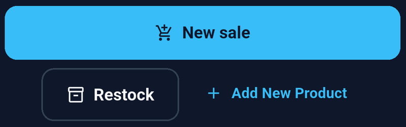
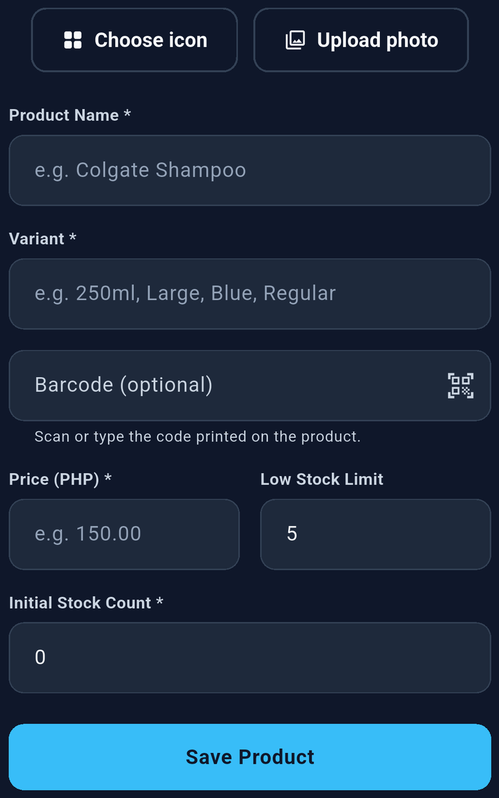
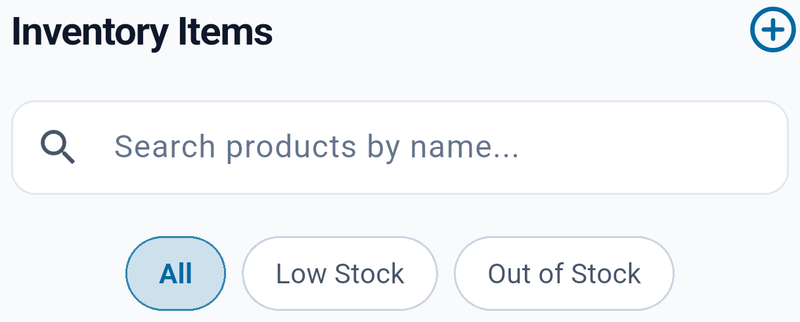

Add a product


- Tap Add New Product on the Dashboard, or the add button in Inventory.
- Choose an icon or use Upload photo to select a product image.
- Complete the product fields.
- Save the product and check that it appears in Inventory.
| Field | What to enter |
|---|---|
| Product Name | A clear name customers or staff recognize. |
| Variant | A size, color, flavor, or other identifying detail. Use “Regular” when appropriate. |
| Barcode | Optional. Type the printed code or scan it. Each code must belong to only one product. |
| Price | The selling price per unit in the selected currency. Zero is allowed; negative prices are not. |
| Low Stock Limit | A non-negative whole number that marks when the product needs attention. |
| Initial Stock Count | The number of units currently available, entered as a non-negative whole number. |


Create separate products for variants you need to count independently, such as small and large bottles. Assign each variant its own barcode if you use scanning.
Find and edit products


Open Inventory and search by product name or variant. Use All, Low Stock, or Out of Stock to narrow the list. Clear the search and select All if an item seems missing.
Open a product to view its details and movement history. Use its edit control to change product information, such as its name, variant, price, photo, barcode, or low-stock limit, then save. To change an existing stock count, use the stock controls described below.
Delete a product
In Inventory, swipe a product to reveal the delete action and read the confirmation before choosing Delete. Choose Cancel to keep it.
Create a backup before removing products you may need again. Deleting a product is not a way to reverse a sale or issue a refund.